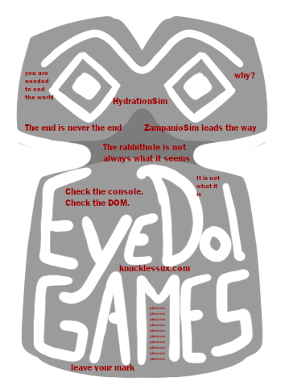

Our Story:Founded in Naples, Italy in 1972, Eyedol games has been producing hit games such as
Zampanio,
Zampanio Classic, Zampanio GOTY Edition, Zampanio Mobile, Farragnarok, Zampanio: The Trading Card Game,
Zampanio Hearts and many, many more!
Join our team! We're always looking for Cultural Ambassadors, play testers, game developers, artists,
writers, programmers, and much, much more!
To apply, simply create the Zampanio content you wish to see in the world! Will it be a story? A game? An artwork? A non-fiction explanation of what Zampanio is and how you found it? A fictional explanation of what Zampanio is and how you found it? The choice is yours!
Congratulations! You're now the proud Minotaur of your very own Branch! Make sure to spread it to others! Who knows what branches will result from your own, or what Crows will find their way to it!
To apply, simply create the Zampanio content you wish to see in the world! Will it be a story? A game? An artwork? A non-fiction explanation of what Zampanio is and how you found it? A fictional explanation of what Zampanio is and how you found it? The choice is yours!
Congratulations! You're now the proud Minotaur of your very own Branch! Make sure to spread it to others! Who knows what branches will result from your own, or what Crows will find their way to it!
We here at Eyedol Games, Inc take corporate responsibility very seriously!
We pledge to bring ourselves to Net Zero Audience by 2022, more than double our leading competitors.
How will we do this? It's simple!
Audience Member Vanishes Mysteriously
Eyedol Games, Inc donates to LGBTQ and Disability Charities
New Audience Member discovers Zampanio
For every audience member that vanishes under mysterious circumstances, we will make sure to donate to relevant LGBTQ and disability friendly charities! The Queer to Obsessed With Dangerous Knowledge pipeline is throughly documented and we are proud to support it!
Have you looked to the East? Well, okay, yeah THAT East is fine. But perhaps a new East exists?
